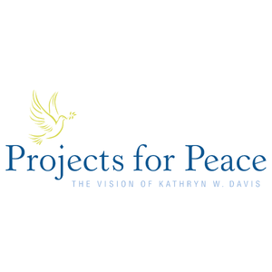
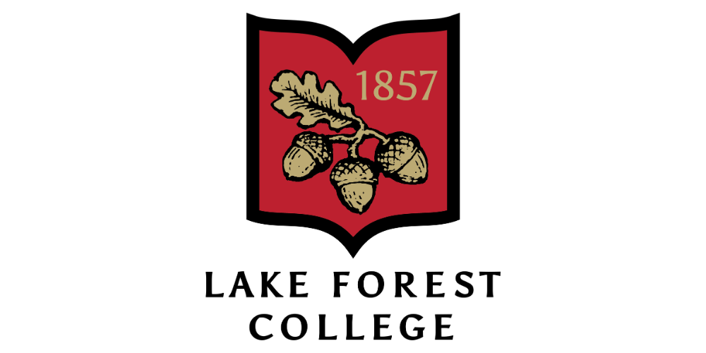
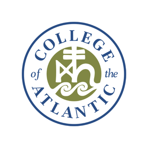
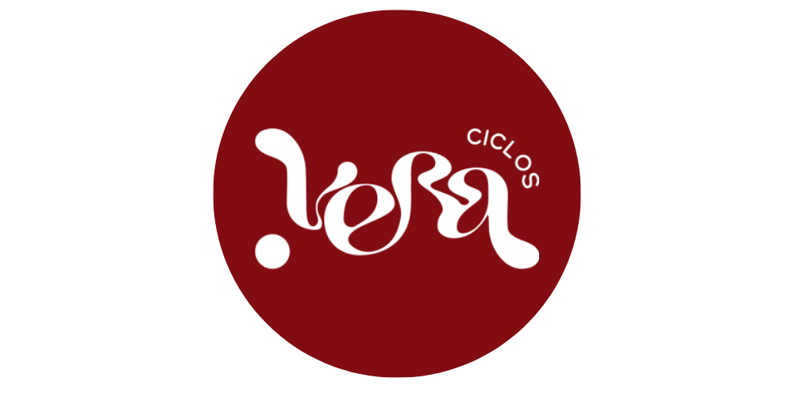

Solo productos
Sin educación ni seguimiento, el acceso puede quedarse en una entrega aislada.
Educación. Equidad. Oportunidad.
Construimos equidad, acceso y oportunidad mediante educación integral, productos sostenibles y acompañamiento comunitario.
MenstruAcción 2026
Lima, Cajamarca y Amazonas serán parte de un modelo que combina educación menstrual, sexual y financiera con productos reutilizables y seguimiento.
La brecha de equidad
La pobreza menstrual no es solo falta de productos. También es falta de información, privacidad, salud, dinero, agua, apoyo y espacios seguros.
adolescentes falta al colegio durante su menstruación.
Ver fuente ↗reporta entornos escolares hostiles durante su periodo.
Ver fuente ↗no puede pagar productos básicos menstruales.
Ver fuente ↗Sin educación ni seguimiento, el acceso puede quedarse en una entrega aislada.
La información no alcanza si una niña no tiene productos, privacidad o apoyo para aplicar lo aprendido.
Hablar de síntomas sin mirar escuela, economía, agua y estigma deja fuera la realidad completa.
Lo invisible
El rastro
El sistema
La logística
Nuestra propuesta
Nuestro modelo integra educación, acceso, comunidad e incidencia para garantizar el derecho a una menstruación digna.
La información convierte miedo en lenguaje, síntomas en señales y vergüenza en conversación segura.
Los productos reutilizables reducen la dependencia mensual de productos desechables y alivian costos a largo plazo.
El acompañamiento posterior permite resolver dudas, cuidar el uso correcto y no abandonar a las beneficiarias.
Ciclo menstrual, anatomía básica, dolor, higiene, señales de alerta, mitos, tabúes y cuidado de productos sostenibles.
Pubertad, consentimiento, autonomía corporal, relaciones sanas, prevención, límites personales y proyecto de vida.
Costos reales de menstruar, ahorro, presupuesto, compra informada, mantenimiento de productos y herramientas de autonomía.
Por qué productos reutilizables
Un kit durable puede reducir el gasto mensual repetido y liberar recursos familiares.
La reutilización reduce la dependencia de productos de un solo uso y su carga ambiental.
Aprender a usar y cuidar productos exige conocer el cuerpo, la higiene y las señales de alerta.
Modelo en acción

Diagnóstico comunitario, estudio de desafíos menstruales, revisión de agua, hábitos, tabúes, bullying y necesidades específicas.
Talleres participativos, sesiones mixtas y diferenciadas, entrega de productos sostenibles, actividades prácticas y formación de embajadoras.
Línea de WhatsApp, seguimiento a 3, 6 y 9 meses, encuestas, acompañamiento, soporte educativo y continuidad comunitaria.
Impacto y voces
En 2023, el piloto en Puente Piedra mostró que una intervención puede cambiar la forma en que las participantes entienden su cuerpo, su cuidado y su futuro.
9.8/10
9.7/10
8.3/10
9.9/10
“
Quiénes somos
Somos un equipo interdisciplinario organizado en cinco áreas para convertir investigación, logística, cuidado, comunicación y alianzas en acción territorial.
personas voluntarias
áreas de trabajo
macroregiones del Perú
Diseño curricular, implementación escolar, facilitación y adaptación comunitaria.
Diagnóstico, reportes, evidencia, evaluación, sostenibilidad ambiental y aprendizaje institucional.
Seguimiento, cuidado, rutas de apoyo, espacios seguros y acompañamiento posterior.
Narrativa pública, campañas, redes, materiales visuales y movilización comunitaria.
Presupuesto, donaciones, procesos institucionales, articulación legal y alianzas estratégicas.
Aquí podremos añadir tarjetas por persona con foto, nombre, área, región y una frase breve. Por ahora queda listo el espacio para crecer sin saturar la página.
Aliados y patrocinadores
Gracias a esta red, MenstruAcción puede llegar a tres colegios en Lima, Cajamarca y Amazonas con respaldo, productos y conocimiento.

Patrocinador principal del proyecto 2026.

Institución universitaria que respaldó la postulación.

Institución vinculada al liderazgo y desarrollo original de MenstruAcción.

Aliado local para productos menstruales sostenibles y culturalmente pertinentes.
Súmate
Ayúdanos a escalar este proyecto a más regiones del Perú y cambiar las vidas de más niñas y jóvenes.
Open Letter
An open letter from Carla F. L. Martinez Becerra, Founder of MenstruAcción
I believe menstrual poverty must be understood as a political cry against a system that punishes our biology and profits from our silence.
Let me say that again, because the words poverty and menstruation are both so often whispered.
A political cry. Not a hygiene problem. Not a girl problem. Not a charity case. A political cry against a system that watches us bleed, charges us for the right to manage it, shames us for needing to, then calls our suffering natural.
I was eleven years old when I first bled.
It was January 2019. I woke up very early like any other day, ready to work. I walked to the bathroom. And then I saw it—a canvas of red on the floor below me.
Panic surged through me. Tears fell from my eyes. There was no mother, no sister, no grandmother, no woman of familiarity within my reach. And for this occasion, my father was no man to turn to for insight.
That morning, I learned what menstruation was. Not from a conversation. Not from a class. From blood on a floor and the terror of having no one to support me.
And I hid it.
Menstruation was a topic of no-conversation. And when it did have a seat at the table, it turned into a hatred chant—one I did not comprehend at the time. I was so afraid my family would find out. And when they finally did, I received some exciting news from these chants: I had "become a woman," as they said.
But I did not feel like one. What does that even mean?
What I felt was the red and pain running down my legs and not knowing what to do.
Pads were luxuries I could not afford. Not when money had to be used strictly to feed ourselves. And tampons? They would "take my virginity"—because that is what I had heard during those short, uncomfortable chants.
So paper and towels became my best friends. I walked uncomfortably, painfully, as the paper sometimes left tiny cuts in my legs.
When pads eventually became attainable, economic reality forced me to stretch their utility—using them for hours and hours beyond any safe recommendation, just to save money. My mother would say we were saving the environment by not using as many.
Meanwhile, infections became common.
I will never forget the time I had to be injected seven times during two days at the hospital because of a vaginal infection. I held my mother's hand every time, crying from the pain. And she said: "It happened to me too. This shall pass."
For everyone, it was normal.
But the true earthquake came later.
I was diagnosed with polycystic ovary syndrome (PCOS) just before moving countries. I had won a scholarship to represent my country in the Netherlands. But with my hopes and my 23kg-suitcase came 12 cysts in my body. I finally had an answer for the years of immense monthly pain that had been treated as nothing.
"We are women. We must be used to pain," said my friends.
"You are crying for nothing," said the boys in my class.
"You are just weak," said the entire world.
Surgical intervention lay beyond my reach. So I endured. Months of pills with names I still struggle to pronounce. Pills that made my head throb, my abdomen coil in pain, my body weary. Months of pain I had to navigate alone in a new country.
I am not the only girl who lived this.
I was not the only girl who received a late diagnosis—if any. Who had to look back at years of pain that had been normalized. Who learned silence before she learned care.
This is why MenstruAcción exists.
We do not believe the solution is only donating pads. We do not believe the solution is only giving one workshop and leaving. Menstrual poverty is not only the absence of products. It is also the absence of information. The absence of privacy. The absence of safe conversations. The absence of clean water. The absence of adults who know how to respond. The absence of money. The absence of words.
A girl can receive a product, but if she does not know how to use it, care for it, or talk about her body without fear, the support remains incomplete.
A girl can receive information, but if she has no product, no privacy, no resources, no one to ask after the workshop ends—that information also remains incomplete.
And even worse: a girl can receive both, but if the boys are not part of the conversation, she will be, once again, fighting alone.
This year, we won a $10,000 Projects for Peace grant to implement our program in three public schools across three regions of Peru: Lima on the coast, Cajamarca in the Andes, and Amazonas in the Amazon.
But costs have risen. Transportation is more expensive. Materials like cotton have become harder to budget for. The exchange rate shifted, reducing the real value of what we thought we had. That difference is not just in money. It is transport. It is materials. It is food. It is the difference between reaching girls with enough care or cutting pieces of a program that was meant to be holistic.
We opened a GoFundMe because we refuse to let this become a reduced version of what we promised.
I dream of a world where no girl has to decide between buying a menstrual product or buying food.
I dream of a world where a girl does not have to hide, miss class, or feel ashamed because of something her body does naturally.
I dream of a world where pain is not treated as normal just because we are women.
Recently, I interviewed girls who participated in our first project. Three years later, they still remembered it. Some said it changed their lives. Some said they no longer worry about staining in class or while playing sports.
One spoke about freedom.
I know that word can sound big. But for a girl who has lived her body with fear, being able to say freedom is not small.
Poverty is not only what people lack. It is also what society decides they can live without.
We do not believe girls should live without information. Without products. Without support. Without dignity. Without freedom.
We are MenstruAcción. And we are trying to build a Peru where menstruation is not an obstacle, but an experience lived with knowledge, care, dignity, and possibility.
If this letter reaches you, I ask you to consider supporting us. That could mean donating. It could mean sharing our GoFundMe. It could mean sending this letter to someone who cares about Peru, education, girls, public health, or justice.
No girl should miss school for bleeding.
With gratitude, hope, and fury,
Carla F. L. Martinez Becerra
Founder & Executive Director
MenstruAcción